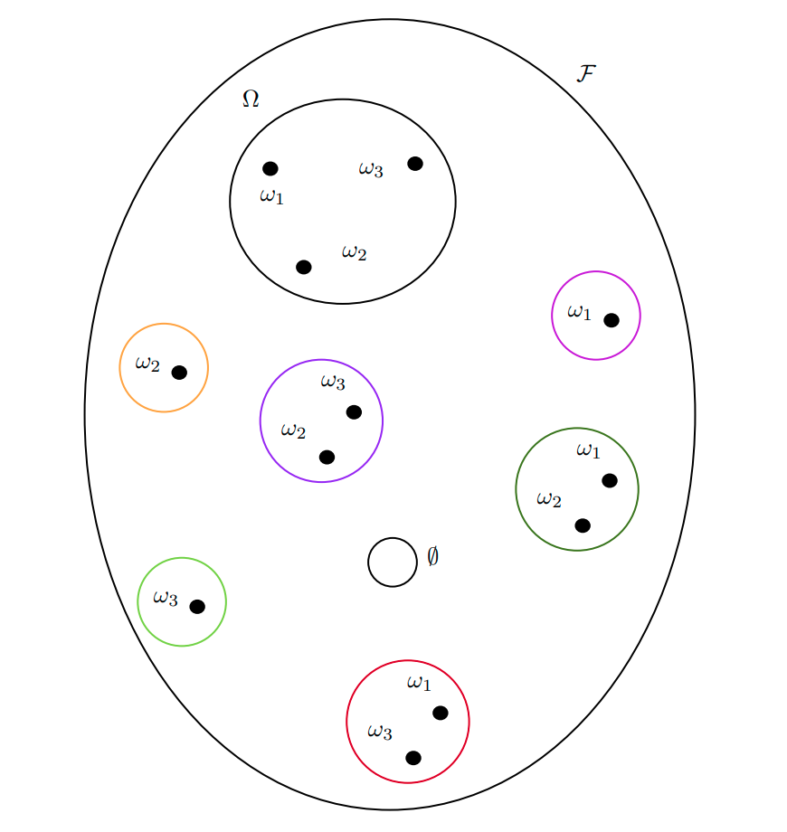
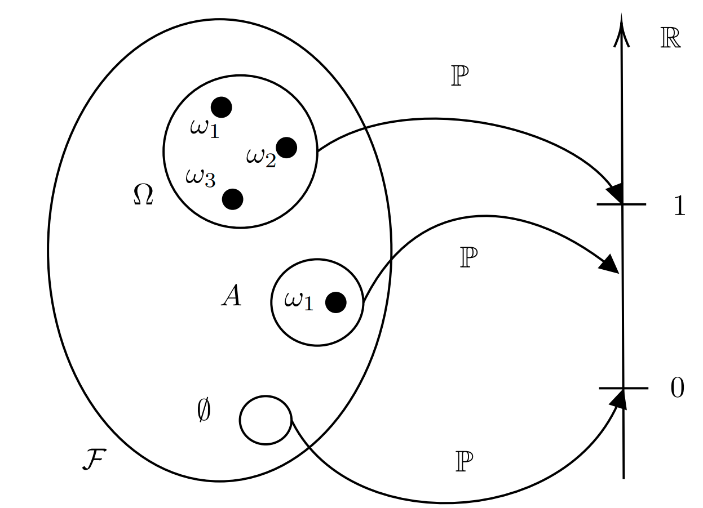
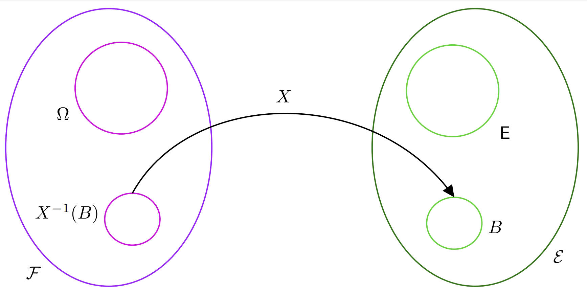
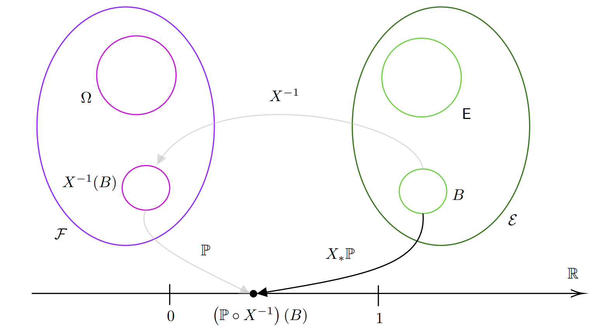
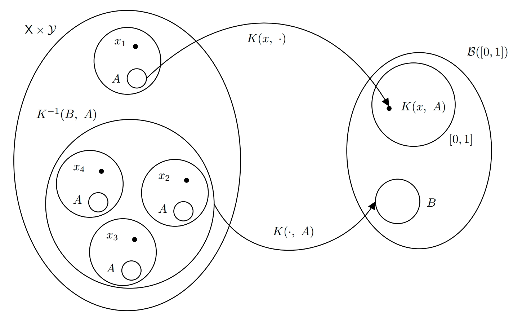

<div id="sample-space" class="section level1">
<h1>Sample Space</h1>
<p>
</p>
</div>
<div id="event-space" class="section level1">
<h1>Event Space</h1>
<p></p>
</div>
<div id="probability-measure-and-probability-space" class="section level1">
<h1>Probability Measure and Probability Space</h1>
<p></p>
</div>
<div id="random-variable" class="section level1">
<h1>Random Variable</h1>
<p></p>
</div>
<div id="probability-distribution" class="section level1">
<h1>Probability Distribution</h1>
<p></p>
</div>
<div id="markov-transition-kernel" class="section level1">
<h1>Markov Transition Kernel</h1>
<p></p>
</div>
